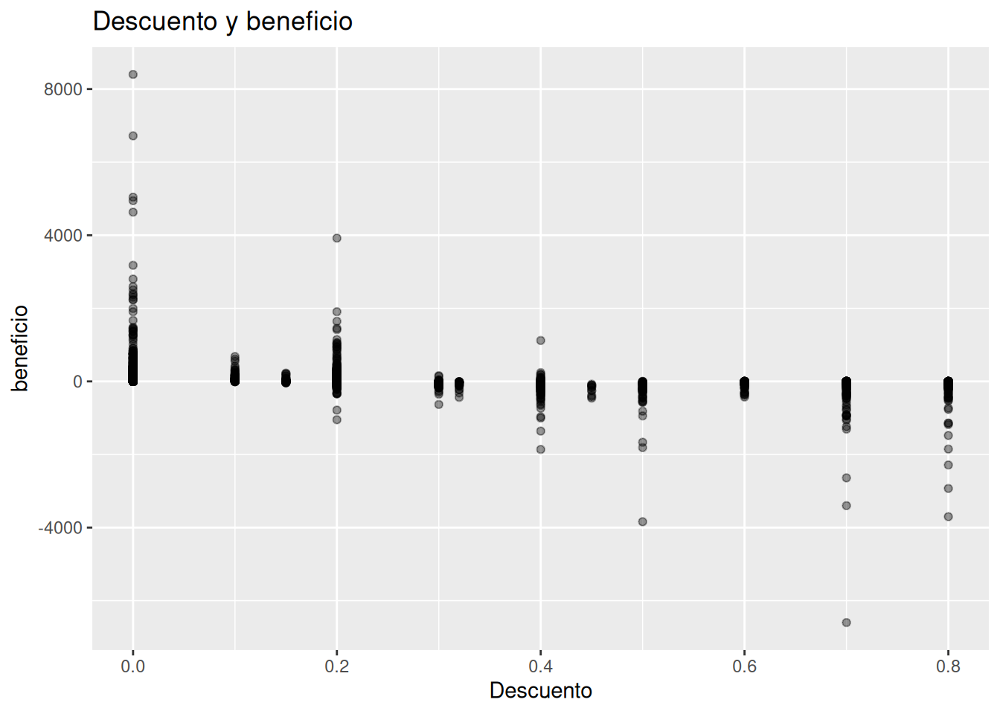
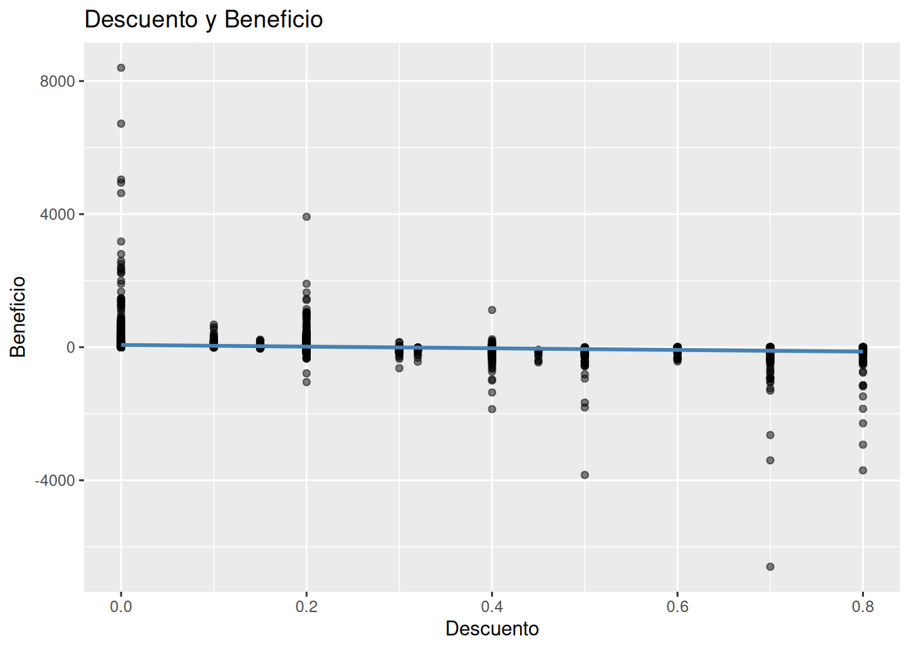
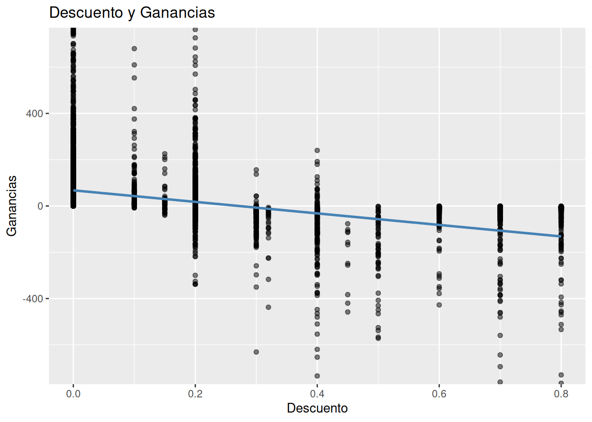
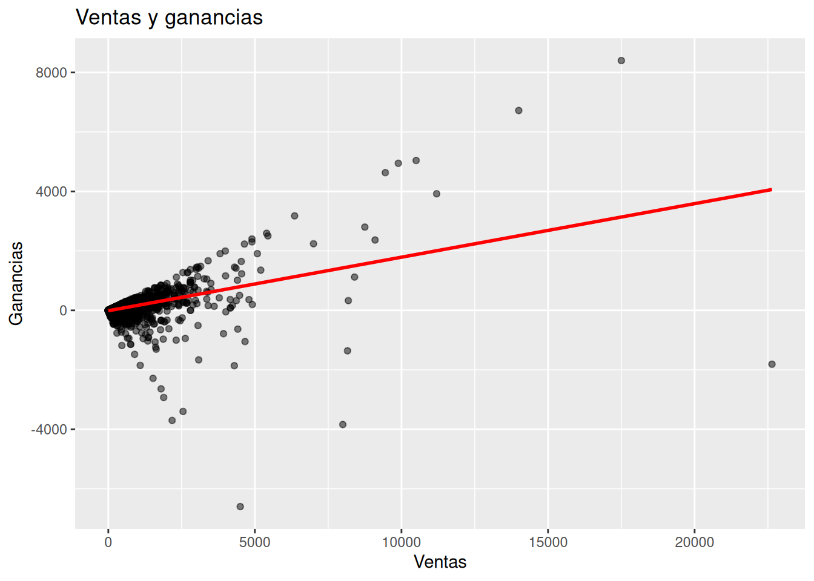
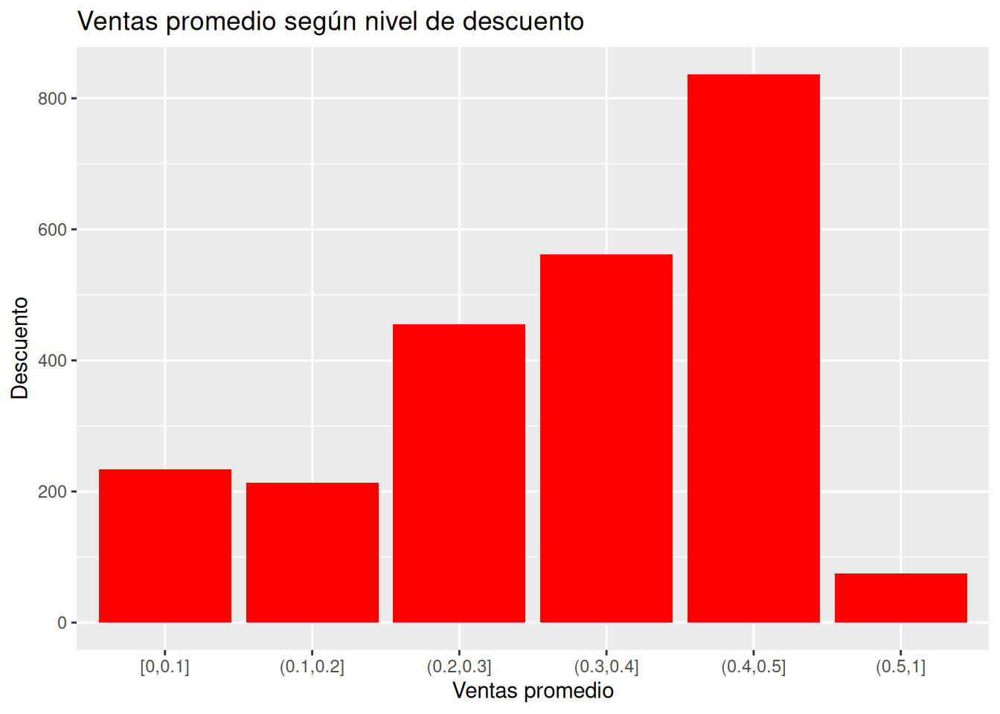
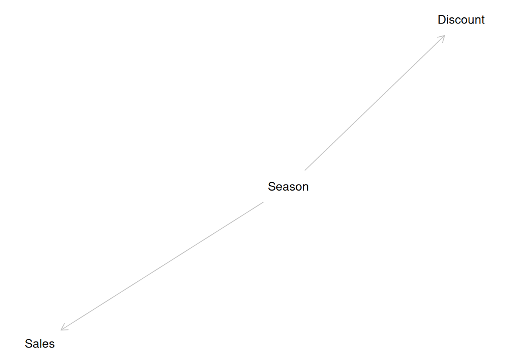

Imagina que un gerente de una cadena de supermercados revisa el dashboard mensual de ventas. Observa un dato que le llama la atención: durante los meses en que aumenta la inversión en publicidad, también aumentan las ventas.
La conclusión parece inmediata.
“La publicidad hizo crecer las ventas.”
Es una explicación razonable. Incluso podría ser correcta. Sin embargo, los datos por sí solos todavía no permiten afirmarlo.
Tal vez esos meses coinciden con la temporada navideña, cuando las personas compran más y, al mismo tiempo, la empresa decide invertir más en publicidad. En ese caso, tanto el aumento de la publicidad como el incremento de las ventas podrían tener una causa común: la estacionalidad.
Veamos otro ejemplo más cotidiano.
En muchos países existe una fuerte correlación entre la venta de helados y el número de personas que sufren ahogamientos en playas y piscinas. Si representáramos ambos valores mes a mes, probablemente observaríamos que aumentan y disminuyen casi al mismo tiempo.
¿Significa eso que comer helados provoca ahogamientos?
Por supuesto que no.
Lo que ocurre es mucho más sencillo: durante el verano hace más calor. Ese aumento de la temperatura anima a muchas personas a comprar helados y también a visitar playas y piscinas. El verano influye sobre ambas variables al mismo tiempo.
Este tipo de situaciones aparecen constantemente en Business Analytics. Los datos muestran patrones interesantes, pero comprender qué los produce requiere algo más que observar una gráfica.
A lo largo de este libro hemos aprendido a cuantificar la incertidumbre, construir modelos probabilísticos e interpretar resultados con prudencia. En este capítulo añadiremos una pieza fundamental a esa forma de pensar: aprenderemos a distinguir entre una asociación observada y una explicación causal.
No estudiaremos métodos avanzados de inferencia causal. Nuestro objetivo es mucho más modesto, pero también muy útil: desarrollar el hábito de preguntarnos si una explicación realmente está respaldada por la evidencia o si simplemente estamos interpretando una correlación como si fuera una demostración.
Después de todo, los datos muestran patrones. Las personas construyen explicaciones.
Y las buenas decisiones nacen cuando combinamos evidencia con razonamiento.
2. ¿Qué significa que dos variables estén asociadas?
Antes de hablar de causalidad conviene entender una idea mucho más simple: la asociación.
Dos variables están asociadas cuando tienden a cambiar juntas siguiendo algún patrón. Ese patrón puede ser positivo, negativo o incluso más complejo, pero lo importante es que conocer una variable aporta alguna información sobre la otra.
Por ejemplo, en un supermercado es frecuente observar que los pedidos con mayor cantidad de productos generan ventas de mayor valor. No ocurre exactamente igual en todos los pedidos, pero sí existe una tendencia general.
Eso es una asociación.
No estamos diciendo todavía que una variable provoque la otra. Simplemente estamos describiendo un patrón observado en los datos.
Una de las formas más sencillas de explorar estas relaciones es mediante un diagrama de dispersión (scatterplot), donde cada punto representa una observación.
Explorando una asociación en Superstore
Como ejemplo utilizaremos el conjunto de datos Superstore Sales, que hemos empleado en capítulos anteriores.
Supongamos que queremos explorar la relación entre el descuento aplicado (Discount) y el beneficio obtenido (Profit).
# Diagrama de dispersión que relaciona el descuento con las gananciassales %>%ggplot(aes(x = Discount, y = Profit)) +geom_point(alpha =0.4) +labs(title ="Descuento y beneficio",x ="Descuento",y ="beneficio" )

¿Qué observamos?
Cada punto representa una venta realizada por la empresa.
En el eje horizontal aparece el descuento aplicado al cliente.
En el eje vertical aparece el beneficio obtenido en esa venta.
En lugar de buscar una línea perfecta, lo primero que debemos preguntarnos es:
¿Existe algún patrón general?
En muchos casos observaremos que los descuentos más elevados suelen asociarse con beneficios menores. Sin embargo, también encontraremos numerosas excepciones.
Algunos pedidos con descuentos altos siguen siendo rentables.
Otros pedidos sin descuento generan pérdidas.
Los datos reales rara vez forman una línea perfecta.
Y eso es completamente normal.
La variabilidad sigue estando presente
Este gráfico también nos recuerda una idea importante que ha aparecido durante todo el libro: la variabilidad.
Aunque exista una tendencia general, cada observación sigue siendo diferente.
Esto significa que una asociación nunca permite predecir el resultado exacto de un caso individual.
Más bien nos ayuda a comprender cómo suele comportarse el sistema en promedio.
Esta forma de pensar resulta muy familiar para un analista bayesiano.
No buscamos una respuesta única y exacta.
Buscamos comprender qué resultados son plausibles y cuál es la incertidumbre que todavía permanece.
Añadiendo una línea de tendencia
Para facilitar la interpretación podemos añadir una línea suavizada.
# Tendencia y diagrama de dispersión que relaciona el descuento # con las gananciassales %>%ggplot(aes(x = Discount, y = Profit)) +geom_point(alpha =0.5) +geom_smooth(method ="lm",se =FALSE,color ="steelblue" ) +labs(title ="Descuento y Beneficio",x ="Descuento",y ="Beneficio" )

Podemos hacer zoom en el eje Y para visualizar mejor la tendencia
# Tendencia y diagrama de dispersión que relaciona el descuento # con las ganancias. Con zoom en el eje Ysales %>%ggplot(aes(x = Discount, y = Profit)) +geom_point(alpha =0.5) +geom_smooth(method ="lm",se =FALSE,color ="steelblue" ) +coord_cartesian(ylim =c(-700, 700)) +labs(title ="Descuento y Ganancias",x ="Descuento",y ="Ganancias" )

La línea resume la tendencia promedio observada en los datos.
Es una ayuda visual.
No representa el comportamiento de cada pedido individual.
Mucho menos demuestra que el descuento sea la causa de todas las variaciones del beneficio.
De hecho, el beneficio también depende de muchos otros factores:
el tipo de producto;
el costo del inventario;
la categoría;
la región;
el volumen de compra;
la competencia;
promociones simultáneas.
Una sola gráfica difícilmente puede capturar toda esa complejidad.
Asociación no significa explicación
Cuando comenzamos a trabajar con datos es muy tentador interpretar rápidamente cualquier patrón que observamos.
Si dos variables cambian juntas, nuestro cerebro busca inmediatamente una explicación.
Es un comportamiento natural.
Nuestro cerebro está diseñado para encontrar historias.
Pero los datos únicamente muestran que existe una asociación.
No nos dicen por qué existe.
Esa diferencia, aparentemente pequeña, es una de las ideas más importantes de todo Business Analytics.
Una buena visualización puede revelar un patrón.
Comprender el mecanismo que produjo ese patrón requiere combinar datos, conocimiento del negocio y pensamiento crítico.
3. Correlación no implica causalidad
Hasta ahora hemos visto que dos variables pueden estar asociadas. Incluso hemos observado que esa asociación puede visualizarse fácilmente mediante un gráfico de dispersión.
Sin embargo, todavía no hemos respondido una pregunta mucho más importante:
¿Por qué existe esa asociación?
Y aquí es donde comienzan los verdaderos desafíos del análisis de datos.
Cuando observamos un patrón, nuestro cerebro intenta construir una historia que lo explique. Es un proceso casi automático. Buscamos causas, relaciones y mecanismos porque comprender el mundo depende, en gran parte, de nuestra capacidad para explicar lo que observamos.
El problema es que los datos no siempre contienen toda la información necesaria para construir esa explicación.
Una correlación puede ser el resultado de muchas situaciones diferentes.
Una misma correlación puede tener varias explicaciones
Supongamos que una empresa descubre que los clientes que reciben mayores descuentos suelen realizar compras de mayor valor.
¿Cuál sería la conclusión más inmediata?
Probablemente algo como:
“Los descuentos hacen que los clientes compren más.”
Es una hipótesis razonable.
Pero no es la única posible.
También podrían existir otras explicaciones.
Por ejemplo:
quizá los descuentos se ofrecen precisamente a los clientes que ya pensaban realizar compras grandes;
quizá los descuentos se aplican durante campañas especiales donde aumenta el consumo de forma natural;
quizá determinados tipos de productos reciben descuentos con más frecuencia y, además, suelen venderse en grandes cantidades.
En todos estos casos observaríamos una asociación muy parecida, aunque el mecanismo que la produce sería completamente diferente.
La correlación, por sí sola, no permite distinguir entre estas posibilidades.
Un ejemplo cotidiano
Volvamos al ejemplo de los helados.
Cada verano aumentan simultáneamente:
la venta de helados;
las visitas a playas y piscinas;
el número de ahogamientos.
Si únicamente observáramos los datos, encontraríamos una correlación bastante clara entre la venta de helados y los ahogamientos.
Sin embargo, casi nadie concluiría que comer un helado aumenta el riesgo de ahogarse.
Sabemos que existe una explicación alternativa mucho más plausible: el verano.
La temperatura influye sobre ambas variables al mismo tiempo.
Este ejemplo se ha convertido en un clásico porque muestra algo muy importante:
Una correlación puede ser completamente real y, aun así, no representar una relación causal directa.
No se trata de que los datos estén equivocados.
Lo que puede estar equivocada es nuestra interpretación.
El peligro de las conclusiones apresuradas
En Business Analytics este tipo de errores puede tener consecuencias importantes.
Imaginemos que una empresa observa el siguiente patrón:
Las sucursales con más vendedores generan mayores ingresos.
Una reacción rápida podría ser contratar más vendedores para todas las sucursales.
Pero antes conviene hacerse algunas preguntas.
¿Las sucursales venden más porque tienen más vendedores?
¿O tienen más vendedores porque ya eran las sucursales con mayor volumen de clientes?
Ambas explicaciones producen exactamente la misma asociación observada.
Sin información adicional resulta imposible saber cuál es la correcta.
Una decisión tomada demasiado rápido podría aumentar considerablemente los costos sin generar el incremento esperado en las ventas.
Lo que realmente muestran los datos
Cuando analizamos una base de datos, lo único que observamos directamente son patrones.
Los datos no incluyen etiquetas indicando cuál variable causa a otra.
Tampoco contienen una explicación escrita sobre el mecanismo que produjo cada observación.
Eso significa que el análisis tiene dos componentes diferentes.
El primero consiste en identificar patrones.
El segundo consiste en interpretarlos.
Y esos dos procesos no son equivalentes.
Detectar una asociación es una tarea estadística.
Explicarla requiere además conocimiento del contexto, experiencia del negocio y pensamiento crítico.
Un ejemplo con Superstore
Volvamos al conjunto de datos Superstore Sales.
Podemos explorar la relación entre las ventas (Sales) y el beneficio (Profit).
# Línea suavizada de tendencia y diagrama de dispersión que relaciona# las ventas con las gananciassales %>%ggplot(aes(x = Sales, y = Profit)) +geom_point(alpha =0.5) +geom_smooth(method ="lm",se =FALSE,color ="red" ) +labs(title ="Ventas y ganancias",x ="Ventas",y ="Ganancias" )

A primera vista observaremos una tendencia positiva.
En promedio, las ventas de mayor valor suelen generar mayores beneficios.
Pero incluso aquí debemos ser prudentes.
No todas las ventas elevadas son rentables.
Algunas pueden implicar descuentos muy agresivos.
Otras pueden corresponder a productos con márgenes muy reducidos.
Incluso pueden existir devoluciones posteriores que el gráfico no refleja.
El gráfico describe una tendencia general.
No explica por qué ocurre.
Una pregunta más útil
En este punto vale la pena cambiar una pregunta por otra.
Muchos analistas principiantes preguntan:
¿Qué variable causa esta otra?
Una pregunta más productiva suele ser:
¿Qué explicaciones podrían generar este patrón?
La diferencia parece pequeña, pero cambia completamente la forma de pensar.
La segunda pregunta invita a considerar hipótesis alternativas.
Nos obliga a reconocer que todavía existe incertidumbre.
Y precisamente esa actitud es una de las principales fortalezas del pensamiento bayesiano.
Un analista prudente piensa en hipótesis
A medida que adquirimos experiencia dejamos de buscar explicaciones inmediatas.
Empezamos a construir varias hipótesis posibles.
Después buscamos nueva evidencia para decidir cuál parece más compatible con los datos.
Este proceso es mucho más parecido a una investigación que a una demostración matemática.
Cada nuevo dato puede reforzar una explicación…
…o debilitarla.
Eso es exactamente lo que hemos hecho durante todo el libro al actualizar nuestras creencias mediante evidencia.
La diferencia es que ahora no estamos estimando un parámetro.
Estamos evaluando posibles explicaciones del mundo real.
4. Variables de confusión
En la sección anterior vimos que una correlación puede tener varias explicaciones posibles.
Una de las situaciones más comunes ocurre cuando existe una tercera variable que influye simultáneamente sobre las dos variables que estamos observando.
A esa tercera variable la llamaremos variable de confusión.
El nombre puede sonar un poco extraño, pero describe muy bien su efecto: introduce una explicación alternativa que puede llevarnos a interpretar incorrectamente una relación observada.
No significa que los datos sean incorrectos.
Lo que ocurre es que la realidad suele ser más compleja de lo que muestra un único gráfico.
Un ejemplo empresarial
Imaginemos que una empresa analiza las ventas de los últimos tres años.
Al revisar los datos descubre algo interesante.
Durante los meses en que ofrece mayores descuentos, las ventas aumentan considerablemente.
La conclusión parece evidente:
“Los descuentos aumentan las ventas.”
Pero antes de aceptar esa explicación conviene hacerse una pregunta más.
¿En qué meses se ofrecieron esos descuentos?
Supongamos que casi todos coincidieron con:
Navidad;
Black Friday;
regreso a clases;
campañas especiales de fin de año.
En esas fechas muchas personas ya tenían intención de comprar.
Además, la empresa decidió lanzar promociones agresivas.
En consecuencia, ocurrieron dos cosas al mismo tiempo:
aumentaron los descuentos;
aumentaron las ventas.
Sin embargo, ambas pudieron estar influidas por un mismo factor: la estacionalidad.
En este caso, el calendario podría explicar parte del patrón observado.
Una historia diferente
Ahora imaginemos otro escenario.
La empresa decide aplicar descuentos únicamente cuando detecta que un producto se vende lentamente.
Es decir, primero aparecen las bajas ventas y después llegan los descuentos.
Si analizáramos los datos meses más tarde, quizá observaríamos nuevamente una asociación entre descuentos y ventas.
Pero ahora la historia sería completamente distinta.
Los descuentos ya no serían la causa inicial del problema.
Serían una respuesta a un problema que ya existía.
Los mismos datos pueden ser compatibles con mecanismos muy diferentes.
Por eso resulta tan importante comprender el contexto del negocio.
Un ejemplo con Superstore
Podemos explorar esta idea utilizando el conjunto de datos Superstore Sales.
Supongamos que queremos observar cómo varían las ventas promedio a medida que cambia el descuento aplicado.
# Crear una variable de tipo factor que etiquete las filas por el# porcentaje de descuentosales <- sales %>%mutate(discount_group =cut( Discount,breaks =c(0, 0.1, 0.2, 0.3, 0.4, 0.5, 1),include.lowest =TRUE ) )# Conocer el tipo de la variable discount_group class(sales$discount_group) # produce: factor
[1] "factor"
# Conocer el tipo de valores de la variable discount_groupunique(sales$discount_group) # produce:
# Agrupar por descuento y resumir por promedio de ventasgrupos_descuento <- sales %>%group_by(discount_group) %>%summarise(mean_sales =mean(Sales),.groups ="drop" )grupos_descuento # produce:
# Gráfico de columnas del descuento vs el promedio de ventasgrupos_descuento %>%ggplot(aes(x = discount_group, y = mean_sales)) +geom_col(fill ="red") +labs(title ="Ventas promedio según nivel de descuento",x ="Ventas promedio",y ="Descuento" )

Este gráfico resume las ventas promedio para distintos niveles de descuento.
Supongamos que observamos que las ventas promedio aumentan conforme crece el descuento.
¿Podemos concluir que ofrecer descuentos siempre incrementa las ventas?
Todavía no.
Quizá los descuentos más elevados se aplican principalmente a productos costosos.
Cuando aparece una asociación interesante, un buen analista evita enamorarse de la primera explicación que se le ocurre.
En lugar de eso, comienza a formular preguntas.
Por ejemplo:
¿Existe alguna variable que no estoy observando?
¿Qué ocurrió antes en el tiempo?
¿Hay diferencias entre productos o regiones?
¿La empresa siguió siempre la misma estrategia comercial?
¿Podría existir otra explicación igualmente razonable?
Estas preguntas rara vez aparecen en un dashboard.
Las hace el analista.
Y muchas veces son más valiosas que cualquier modelo estadístico.
Un pequeño cambio de hábito
Una forma sencilla de reducir errores consiste en cambiar una frase muy común.
En lugar de decir:
“Los datos demuestran que…”
podemos decir:
“Los datos son compatibles con la hipótesis de que…”
Parece una diferencia de lenguaje.
En realidad, es una diferencia de actitud.
La segunda frase reconoce que todavía puede existir información que no hemos observado.
Y precisamente esa humildad intelectual es una de las características más valiosas de un buen analista.
5. Un primer vistazo a los DAGs
Hasta ahora hemos hablado de variables y posibles explicaciones utilizando únicamente palabras.
Sin embargo, cuando las relaciones comienzan a hacerse un poco más complejas, un dibujo sencillo puede resultar mucho más claro que varios párrafos.
Para eso existen los Diagramas Acíclicos Dirigidos, conocidos habitualmente por sus siglas en inglés: DAGs (Directed Acyclic Graphs).
No necesitamos conocer teoría avanzada para utilizarlos.
En este libro los emplearemos únicamente como una herramienta para organizar nuestras hipótesis sobre cómo creemos que funciona un problema.
Podemos pensar en un DAG como un pequeño mapa de ideas.
Cada nodo representa una variable.
Cada flecha representa una posible influencia.
No demuestra que esa influencia exista.
Simplemente hace explícita nuestra hipótesis.
Nuestro primer DAG
Volvamos al ejemplo de los descuentos.
Una posible explicación sería la siguiente:
Descuento ─────► Ventas
Este dibujo expresa una hipótesis muy sencilla.
Creemos que modificar los descuentos puede influir sobre las ventas.
Eso es todo.
Todavía no estamos afirmando que sea cierto.
Simplemente estamos representando una posible explicación.
Añadiendo una tercera variable
Ahora incorporemos la estacionalidad.
Estacionalidad
↙ ↘
Descuento Ventas
La historia cambia por completo.
Ahora estamos diciendo que la época del año puede influir tanto en la estrategia de descuentos como en el comportamiento de los clientes.
Observa que los datos podrían mostrar exactamente la misma correlación que antes.
Lo único que ha cambiado es nuestra explicación del fenómeno.
Y eso es precisamente lo interesante de los DAGs.
Nos obligan a hacer explícitas las hipótesis que normalmente permanecen implícitas en nuestra cabeza.
Dibujando un DAG con dagitty
La librería dagitty permite crear estos diagramas de forma muy sencilla.
# DAG de la influencia de la temporada sobre las ventas y el # descuento como factor de confusióndag <-dagitty(" dag { Season -> Discount Season -> Sales }")# Dibujar DAG de la influencia de la temporada sobre las ventas y # el descuentoplot(dag)

El resultado no pretende impresionar por su complejidad.
Todo lo contrario.
Su valor está en que obliga al analista a responder una pregunta muy importante:
¿Cuál creo que es la historia detrás de los datos?
Esa pregunta suele ser mucho más útil que preguntarse simplemente cuál es la correlación más alta del conjunto de datos.
6. Pensamiento crítico
Si has llegado hasta este punto del libro, probablemente ya no observas un gráfico de la misma manera que al comenzar.
Ahora sabes que detrás de cada punto existe variabilidad.
Que una predicción siempre tiene incertidumbre.
Y que los modelos ofrecen distribuciones de resultados plausibles, no respuestas perfectas.
En este capítulo hemos añadido una idea más a esa forma de pensar.
Las asociaciones necesitan interpretación.
Los dashboards muestran patrones
En muchas empresas se utilizan dashboards para resumir grandes cantidades de información.
Un buen dashboard puede responder preguntas como:
¿Qué productos venden más?
¿Cómo evolucionaron las ventas este mes?
¿Qué regiones presentan mayores beneficios?
¿Qué clientes tienen mayor riesgo de abandonar la empresa?
Toda esta información es extremadamente útil.
Pero conviene recordar algo importante.
Un dashboard muestra qué está ocurriendo.
No necesariamente explica por qué está ocurriendo.
Ese paso adicional requiere conocimiento del negocio, experiencia y pensamiento crítico.
El contexto sigue siendo imprescindible
Supongamos que observamos que las ventas disminuyeron durante el último trimestre.
Antes de proponer una solución podríamos preguntarnos:
¿Entró un nuevo competidor al mercado?
¿Cambiaron los precios?
¿Hubo problemas de inventario?
¿Se modificó la estrategia comercial?
¿La economía del país cambió durante ese período?
Ninguna de estas respuestas aparece automáticamente en un gráfico.
Los datos forman parte de la historia.
No son toda la historia.
Los modelos ayudan; las personas deciden
A lo largo del libro hemos construido distintos modelos estadísticos.
Regresiones lineales.
Regresiones logísticas.
Modelos de pronóstico.
En todos los casos el objetivo fue el mismo:
ayudar a tomar mejores decisiones bajo incertidumbre.
Sin embargo, ningún modelo puede reemplazar completamente el juicio humano.
Los modelos identifican patrones.
Las personas interpretan esos patrones dentro de un contexto.
Por eso dos analistas pueden observar exactamente los mismos datos y llegar a preguntas diferentes.
Y muchas veces, la calidad de las preguntas determina la calidad de las decisiones.
Una buena práctica
Existe un hábito muy sencillo que puede mejorar considerablemente cualquier análisis.
Antes de aceptar una explicación, pregúntate:
¿Qué otra explicación podría ser compatible con estos mismos datos?
No siempre encontrarás una respuesta diferente.
Pero el simple hecho de hacer esa pregunta reduce el riesgo de llegar a conclusiones precipitadas.
Ese pequeño ejercicio de humildad intelectual suele producir mejores decisiones que muchas horas adicionales de análisis estadístico.
7. Reflexión bayesiana
Desde el primer capítulo hemos defendido una idea que puede resumirse en una sola frase:
Pensar probabilísticamente significa convivir con la incertidumbre en lugar de ignorarla.
En este capítulo esa idea adquiere un nuevo significado.
La incertidumbre no solo aparece cuando hacemos predicciones.
También aparece cuando intentamos explicar el mundo.
Una correlación puede apoyar una hipótesis.
Pero rara vez la demuestra por sí sola.
Por eso el pensamiento bayesiano resulta tan valioso.
En lugar de buscar explicaciones absolutas, aprendemos a construir hipótesis plausibles y a modificarlas cuando aparece nueva evidencia.
Cada nueva observación puede reforzar nuestras creencias…
…o invitarnos a revisarlas.
En cierto sentido, interpretar datos es un proceso continuo de aprendizaje.
Nunca disponemos de toda la información.
Nunca eliminamos completamente la incertidumbre.
Pero sí podemos reducirla progresivamente mediante evidencia de mejor calidad.
Ese cambio de actitud es mucho más importante que cualquier algoritmo.
8. Cierre
A lo largo de este capítulo hemos visto que una correlación puede ser el comienzo de una investigación, pero rara vez representa su final.
Esa diferencia puede parecer pequeña, pero cambia profundamente la forma de analizar información y de tomar decisiones.
Un buen analista no se limita a descubrir relaciones entre variables.
También se pregunta si esas relaciones tienen sentido dentro del contexto del negocio.
Las correlaciones son excelentes preguntas.
Pero rara vez son respuestas definitivas.
En el siguiente capítulo daremos un paso más.
Hasta ahora hemos aprendido a interpretar la incertidumbre.
Ahora aprenderemos un desafío igualmente importante: cómo comunicarla de manera clara, honesta y útil para la toma de decisiones.
Ejercicios
Los siguientes ejercicios buscan fortalecer el razonamiento crítico más que la aplicación de técnicas estadísticas. En varios casos no existe una única respuesta correcta. Lo importante es justificar el razonamiento utilizando los conceptos aprendidos en este capítulo.
Ejercicio 1. ¿Asociación o causalidad?
Para cada una de las siguientes afirmaciones, indica si los datos permiten concluir una relación causal o únicamente muestran una asociación. Justifica tu respuesta.
Las sucursales con más vendedores obtienen mayores ingresos.
Los clientes que reciben descuentos compran más productos.
Las ventas aumentan durante los meses en que se incrementa la inversión en publicidad.
Los productos con mayor precio generan mayores beneficios.
Pregunta de reflexión: ¿Qué información adicional necesitarías para evaluar una posible relación causal?
Ejercicio 2. Buscando variables de confusión
Elige dos de las situaciones anteriores e identifica al menos dos variables de confusión que podrían explicar el patrón observado.
Por ejemplo:
estacionalidad;
tipo de producto;
tamaño de la empresa;
región;
perfil del cliente.
Explica cómo cada una podría influir simultáneamente sobre ambas variables.
Ejercicio 3. Explorando asociaciones con Superstore
Construye un gráfico de dispersión utilizando dos variables numéricas del conjunto de datos Superstore Sales.
Algunas combinaciones posibles son:
Sales y Profit;
Quantity y Sales;
Discount y Profit.
Describe:
el patrón observado;
la variabilidad presente;
al menos dos explicaciones posibles para la asociación encontrada.
Evita concluir inmediatamente que una variable causa a la otra.
Ejercicio 4. Construyendo un DAG sencillo
Utilizando dagitty, dibuja un diagrama para representar una hipótesis causal relacionada con alguno de los siguientes escenarios:
descuentos y ventas;
publicidad y ventas;
satisfacción del cliente y abandono (churn).
Incluye al menos una tercera variable que pueda actuar como variable de confusión.
No existe un único diagrama correcto. Lo importante es que las flechas representen una historia coherente.
Ejercicio 5. Pensamiento crítico
Piensa en una noticia reciente, un informe empresarial o una publicación en redes sociales donde alguien haya afirmado que una variable causó otra.
Responde las siguientes preguntas:
¿Qué evidencia presentó?
¿Podría existir una explicación alternativa?
¿Qué información adicional te gustaría conocer antes de aceptar esa conclusión?
¿Cómo cambiaría tu interpretación si aparecieran nuevos datos?